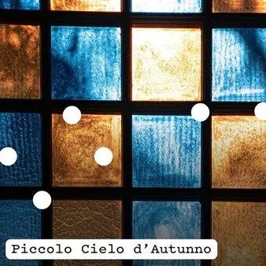

da mer 7 ott a sab 24 ott
Piccolo Cielo d'Autunno
La rassegna "Piccolo Cielo" prosegue nella versione autunnale, vede in calendario i seguenti eventi: mercoledì 7 ottobre – ore 18.30 “Bambine care” – spettacolo teatrale di Francesca Imperadori e Salvatore Valentino Con: Valeria Battaini, Francesca Imperadori e Anna Scola Tre…
 Indicazioni
Indicazioni
- Costi e prenotazioni
- Costo non indicato · Prenotazione non indicata
- Programma
- Programma da verificare. Apri la fonte ufficiale per orari e possibili aggiornamenti.
- In caso di maltempo
- Nessuna indicazione specifica pubblicata.
- Note
- Acquisito automaticamente dalla fonte.
L’EVENTO
Descrizione completa
La rassegna "Piccolo Cielo" prosegue nella versione autunnale, vede in calendario i seguenti eventi:
mercoledì 7 ottobre – ore 18.30
“Bambine care” – spettacolo teatrale di Francesca Imperadori e Salvatore Valentino
Con: Valeria Battaini, Francesca Imperadori e Anna Scola
Tre attrici in scena, tre storie di vita reale prima, durante e dopo l’orfanotrofio
mercoledì 14 ottobre – ore 18.30
"La supercasalinga” – spettacolo teatrale di e con Roberta Paolini
Uno spettacolo comico di teatro fisico e clownerie, che mette in campo una buona dose di follia per trascinare il pubblico dentro una classica avventura da supereroi, con tanto di sigla, effetti speciali e colpi di scena.
sabato 17 ottobre – ore 18.30
Premio Sergio Scabar 2026
Alessandro Ruzzier – autore premiato 2026
Vernissage della mostra dedicata ad Alessandro Ruzzier, fotografo, artista visivo e sonoro triestino, autore selezionato per la sesta edizione del Premio Sergio Scabar.
L’esposizione comprende inoltre una selezione di opere di Sergio Scabar, cui il Premio è dedicato.
La mostra è visitabile nei seguenti orari:
domenica 18 ottobre dalle 10.00 alle 20.00
da lunedì 19 ottobre a giovedì 22 ottobre dalle 16.00 alle 20.00
venerdì 23 ottobre – ore 18.00
Finissage della mostra con Dj Set dell’autore
sabato 24 ottobre – ore 18.00
Festa conclusiva della prima stagione di Piccolo Cielo
Con aperitivo
ore 19.00 – concerto di musica elettro-pop con “The Hunting Dogs”
Il duo composto da Alba Nacinovich e Marco Germini arriva al Piccolo Cielo dopo aver conquistato festival e palchi internazionali con un elettro-pop sospeso tra ricerca, energia ed emozione. Un live travolgente in cui elettronica, voce, live looping, strumenti e improvvisazione si fondono in un’esperienza sonora intensa e sorprendente.
Partecipazione libera a tutti gli eventi
Programma dettagliato QUI
IL PROGRAMMA
Programma e orari
Appuntamenti raccolti dalle fonti elencate. Dove manca un orario, non è ancora disponibile in questa scheda.
Programma pubblicato
- ore 19.00 – concerto di musica elettro-pop con “The Hunting Dogs”
INFORMAZIONI UTILI
Prima di partire
- Controllare la fonte prima di partire.
ORGANIZZAZIONE